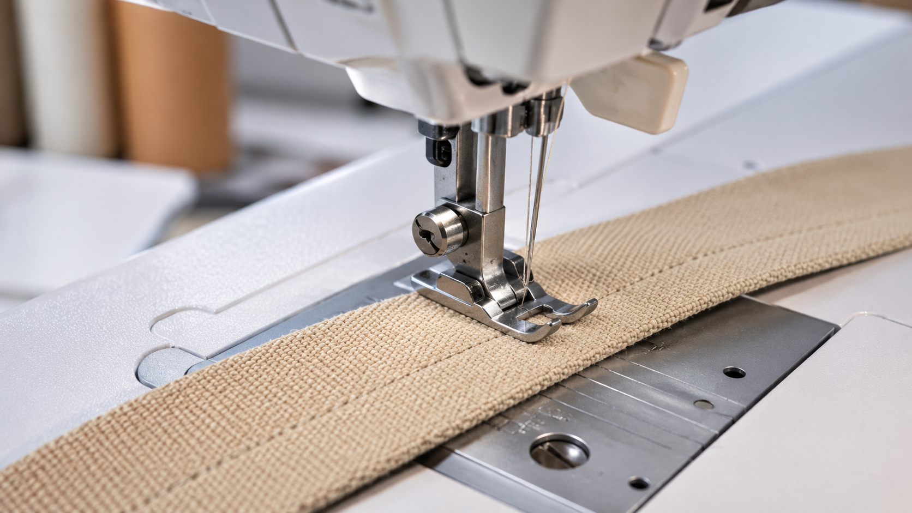
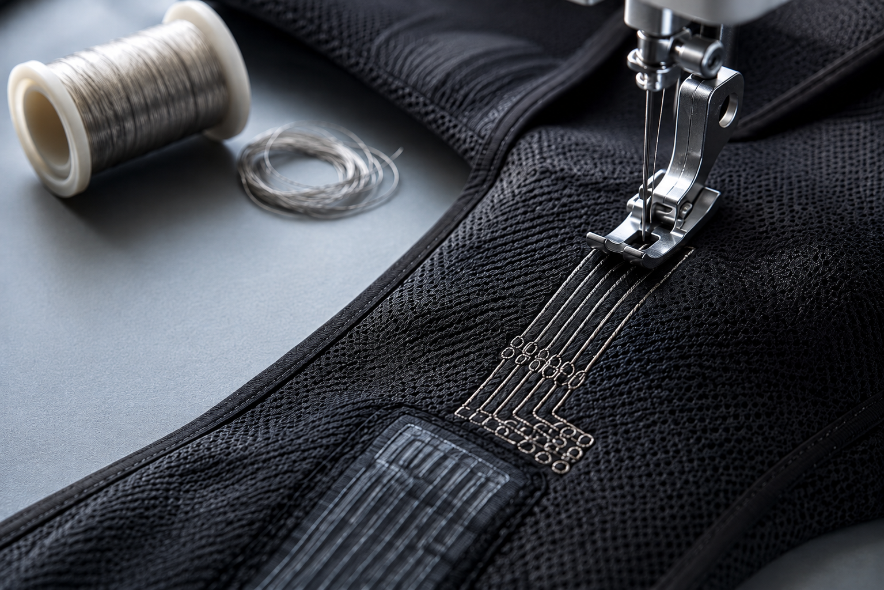
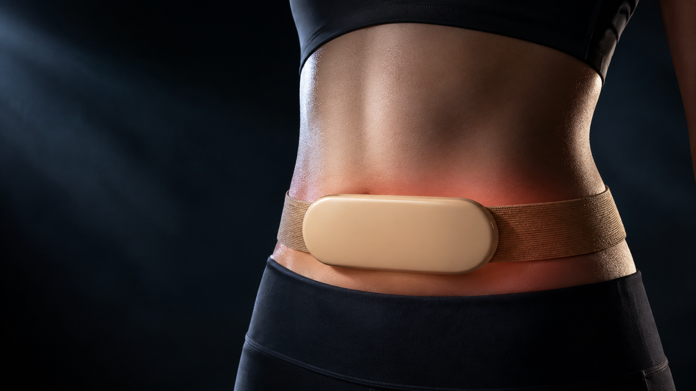

Fabric engineering
Band and garment construction engineered as part of the device: knit selection, patterning, conductive routing, and the joint where textile meets electronics.
The band is a component
Width, elastic content and stitch construction decide whether a device stays in position for eight hours or migrates in twenty minutes. Stitching is done in a controlled room on industrial machines, to a specification, not by eye.

Wiring you can wash
Conductive yarn stitched as a routed track carries signal from a sensor to the module without a cable to snag or a solder joint to crack. Resistance is measured per garment, before and after wash cycling.

Where most wearables fail
The transition from textile to rigid module takes all the load and all the wash cycles. We over-mould that joint on our own presses, so the fabric, the pod and the tool are designed together.

{{ j.title }}
- {{ i }}
04 · What we test
{{ t.title }}
{{ t.desc }}
Have a wearable to construct?
Send the wear scenario and where the sensor has to sit. We will come back with a construction approach and a timeline.